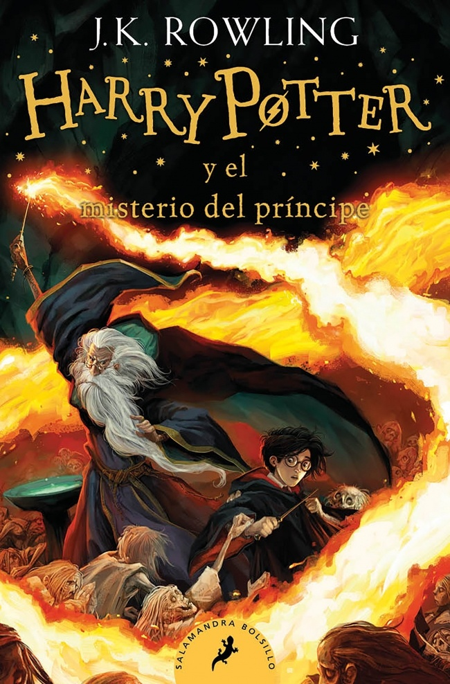

Sobre mí
Hola, soy Mel. Esta página nació de mi amor por los libros, las historias mágicas y esos mundos que nos acompañan incluso después de cerrar la última página.
En La Biblioteca de Mel comparto mis lecturas favoritas, reseñas, recomendaciones y pequeños pedacitos de mi mundo lector.
Me gustan especialmente las historias de fantasía, aventura, misterio y personajes inolvidables.
Algunas historias fueron marcando mi camino y terminaron inspirando este rincón lector.
Mi recorrido entre páginas
📖 El descubrimiento
Empecé a sentir curiosidad por los libros y descubrí el placer de perderme entre historias.
⚡ Percy Jackson
El primer mundo que me atrapó por completo y me hizo enamorarme de la lectura.
🌙 Cazadores de Sombras
Descubrí personajes inolvidables y una saga que me acompañó durante años.
🌍 Nuevos horizontes
Me animé a salir de mis géneros favoritos y encontré historias muy diferentes entre sí.
✨ Hogwarts
Le di una oportunidad a Harry Potter y entendí por qué tantas personas aman este universo.
📚 La Biblioteca de Mel
Decidí crear este espacio para compartir los libros y mundos que dejaron huella en mí.
📖 Actualmente leyendo

Harry Potter y el príncipe mestizo
Estoy disfrutando muchísimo esta etapa de la saga. Cada libro me hace engancharme mucho mas que el anterior.
🌙 Actualmente perdida en Hogwarts